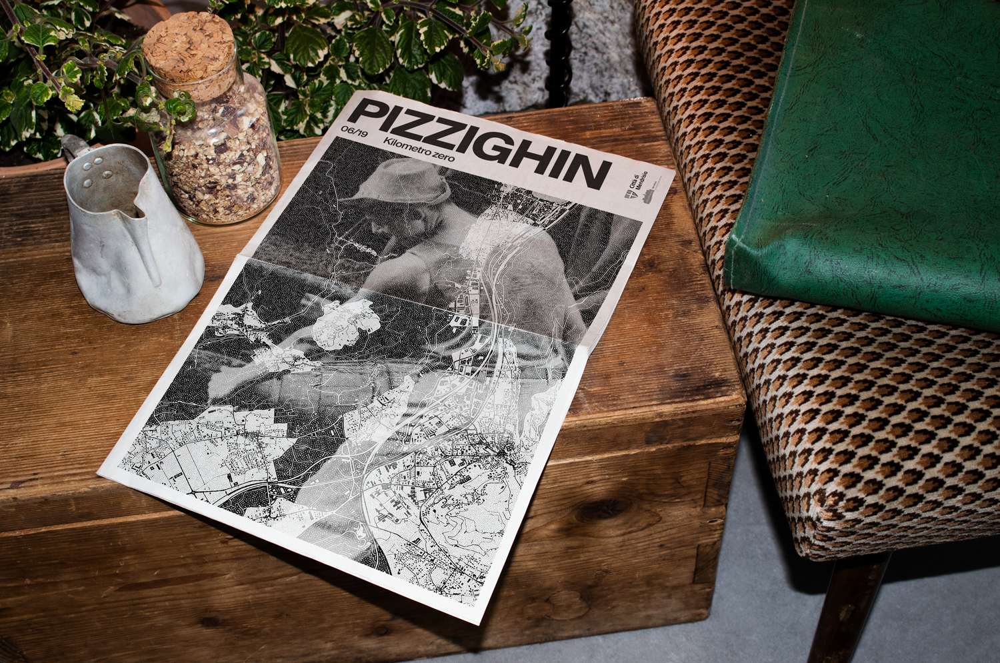
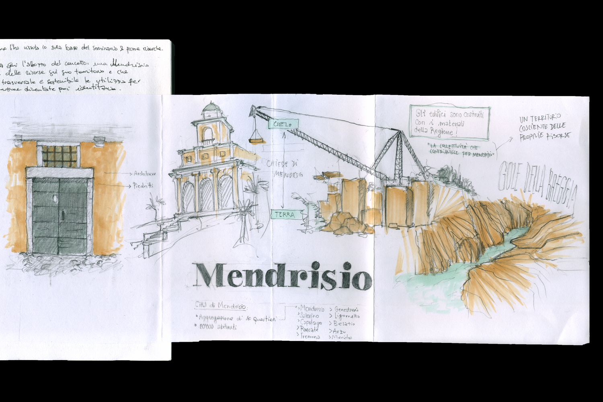
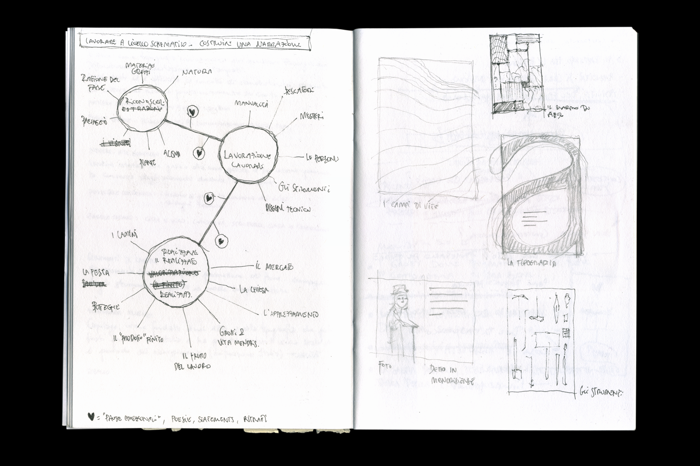
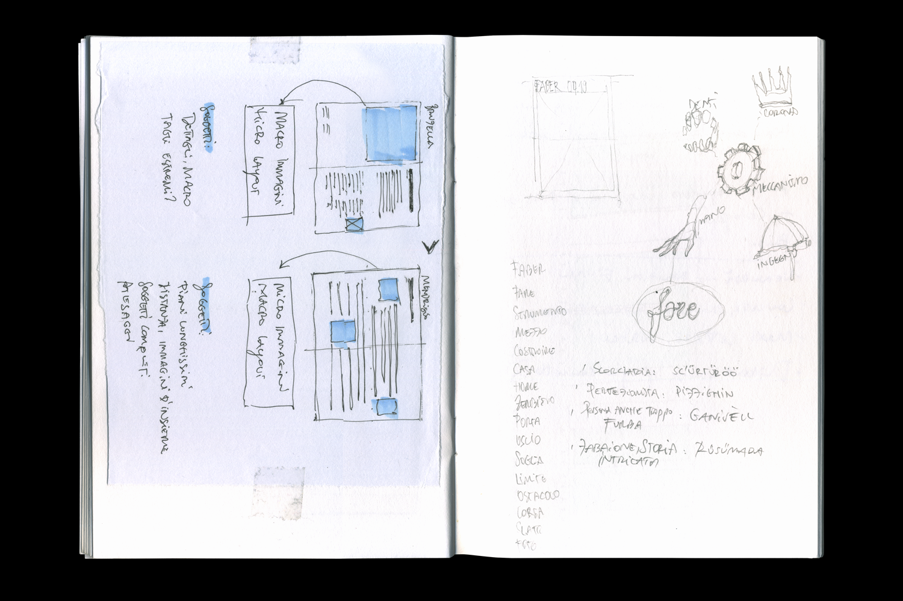
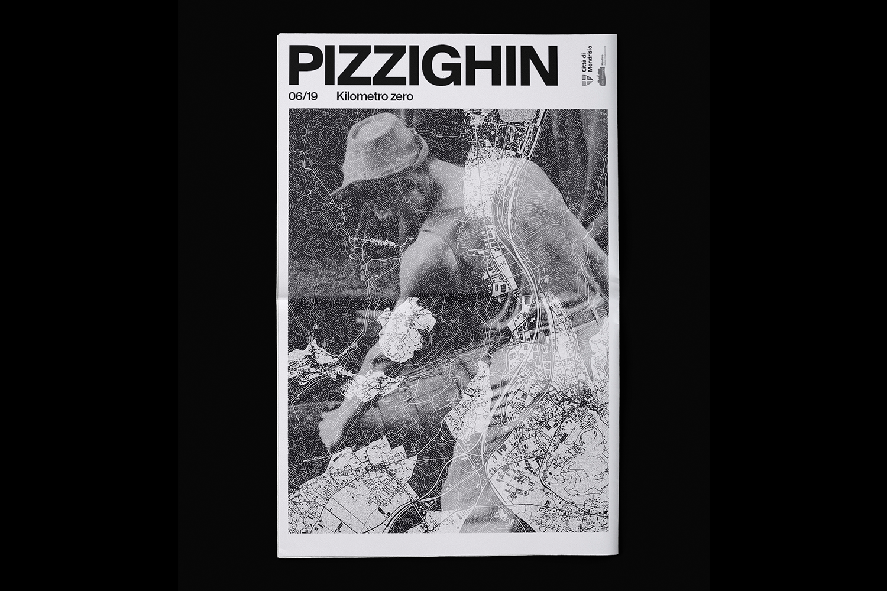
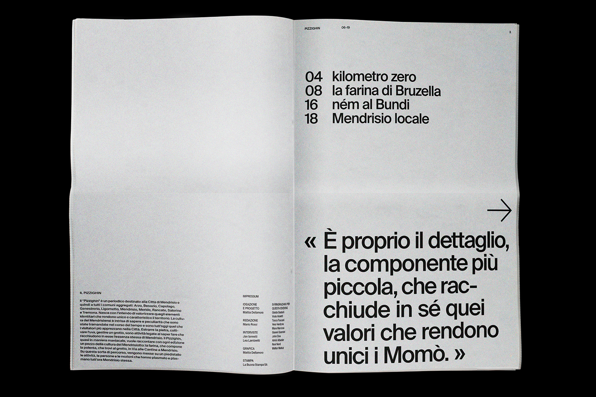
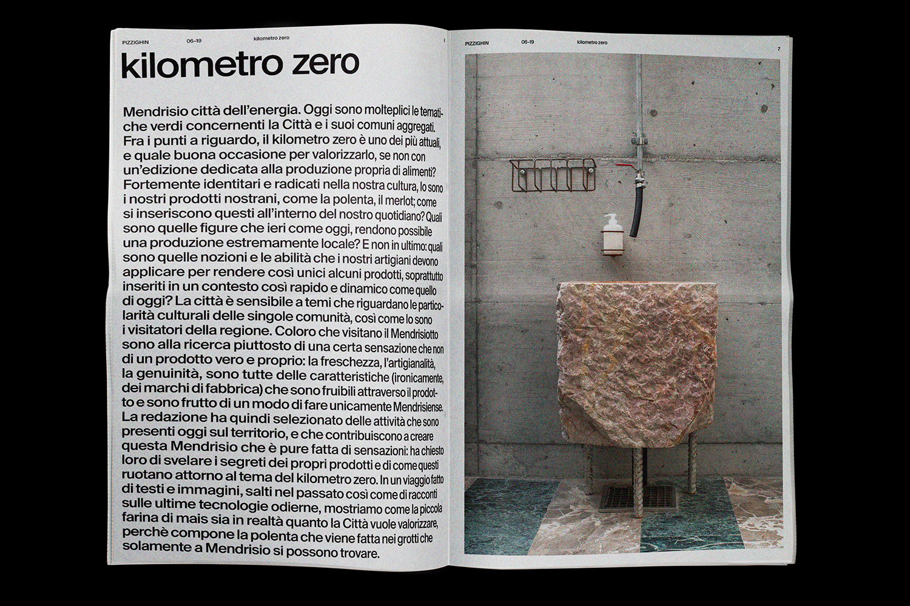
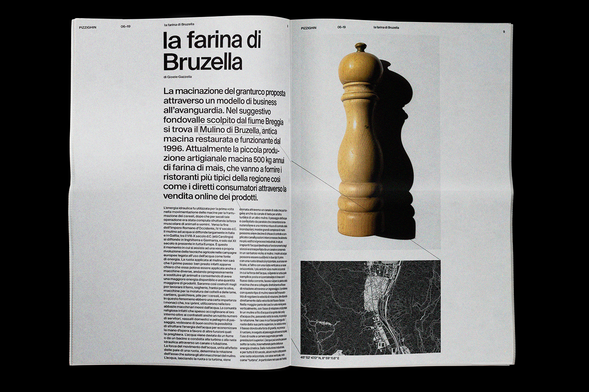
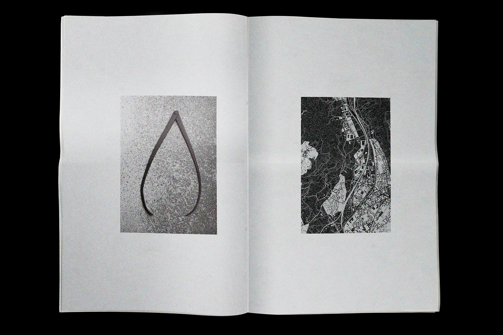
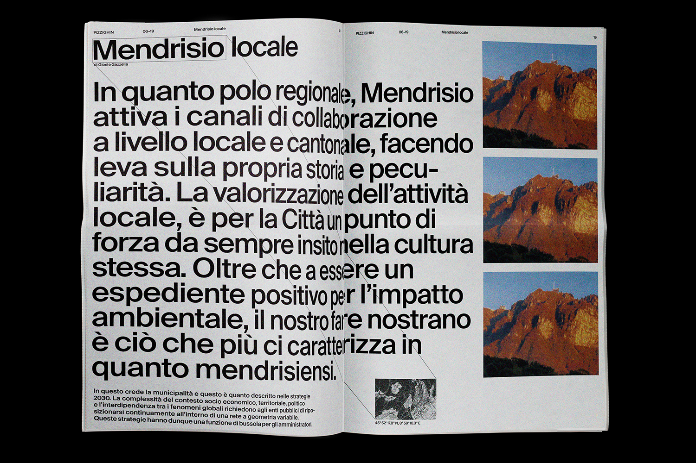

Pizzighin
SUPSI, 2019
The PIZZIGHIN is the newspaper for the city of Mendrisio. The culture of this southern region of Switzerland is rich of knowledge linked with its natural resources and a rural past. This journal takes the reader on a path that starts from the small and most remarkable element and goes on to explain the big Mendrisio and its identity.
The challenge of this school project was to crystallize a complex and abstract topic (the brand "Mendrisio") in a product that can be enjoyed by a public that is the city itself. The final product has been presented as part of an exhibition that SUPSI organized in the city.
Brand, identity, city, strategy
SUPSI, 2019
The PIZZIGHIN is the newspaper for the city of Mendrisio. The culture of this southern region of Switzerland is rich of knowledge linked with its natural resources and a rural past. This journal takes the reader on a path that starts from the small and most remarkable element and goes on to explain the big Mendrisio and its identity.
The challenge of this school project was to crystallize a complex and abstract topic (the brand "Mendrisio") in a product that can be enjoyed by a public that is the city itself. The final product has been presented as part of an exhibition that SUPSI organized in the city.
Brand, identity, city, strategy









